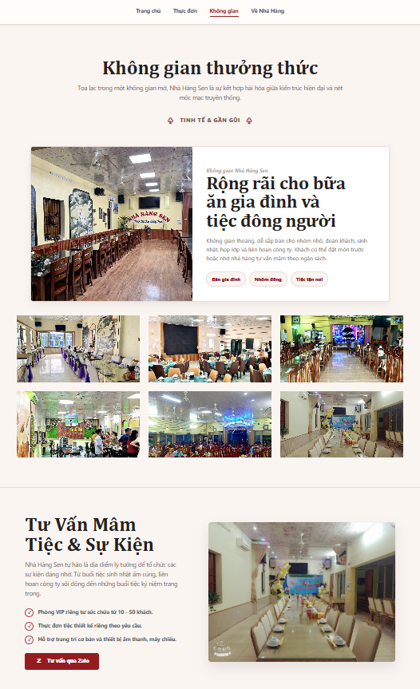

Bố cục responsive
Sắp xếp các section để trang luôn rõ ràng và dễ đọc trên desktop, tablet và mobile.
Website thực tế cho Nhà hàng Sen, được mình thiết kế giao diện, code frontend responsive và deploy live với không khí ẩm thực Việt ấm áp, rõ ràng và dễ thao tác.
Ẩm thực Việt
Tổng quan dự án
Nhà hàng Sen thể hiện hình ảnh thương hiệu ẩm thực qua một website thực tế đã deploy live. Dự án tập trung vào ấn tượng đầu tiên, khám phá thực đơn, không gian nhà hàng, điều hướng rõ ràng và trải nghiệm responsive trên nhiều thiết bị.
Phạm vi
Hình ảnh website


Đóng góp của mình
Sắp xếp các section để trang luôn rõ ràng và dễ đọc trên desktop, tablet và mobile.
Dùng khoảng cách, typography và tương phản để dẫn người xem từ thông điệp hero đến menu và thông tin nhà hàng.
Hoàn thiện và đưa website lên Vercel để có thể truy cập, chia sẻ và kiểm tra như một dự án thực tế.
Tư duy frontend
Định hướng giao diện giúp trải nghiệm nhà hàng trông tinh tế nhưng vẫn dễ nắm bắt thông tin.
Nhìn lại dự án
Dự án này thể hiện cách mình kết nối thiết kế UI/UX với code frontend, cấu trúc responsive và deploy live cho một website nhà hàng thực tế.